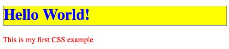

CSS如何工作
任务目标：学习什么是 CSS， 以及它在底层（基本层）是怎么工作的。
什么是 CSS?
CSS全称为“层叠样式表 (Cascading Style Sheets)”，一种向用户指定文档如何呈现的语言， 是一种声明式语言。
层叠（Cascading）指的是决定选择器如何按优先级改变页面外观的规则。这是一个非常重要的特性，因为复杂的网站可以有数千个CSS规则。
文档：通常是用标记语言结构化的文本文件 — HTML 是最常用的标记语言。其他的标记语言，比如 SVG 或者 XML。
呈现文档：将文档转换为用户可用的形式。浏览器被设计用于可视化地呈现文档，比如 Firefox, Chrome 或者 Internet Explorer。
CSS如何影响HTML？
Web浏览器将CSS规则应用于文档来影响文档的显示方式。一个CSS规则由以下组成：
●一组 属性 ，属性的值更新 HTML 内容的显示方式。比如，让元素的宽度是其父元素的50％，或者元素背景变为红色。
●一个 选择器，它选择你想应用更新的属性值的元素。比如，将CSS规则应用到HTML文档中的所有段落上。
一个选择器 + 一组属性 = 规则（一个选择器 + 声明块= 规则）
举个栗子：
HTML:
<!DOCTYPE html>
<html>
<head>
<meta charset="utf-8">
<title>My CSS experiment</title>
<link rel="stylesheet" href="style.css">
</head>
<body>
<h1>Hello World!</h1>
<p>This is my first CSS example</p>
</body>
</html>
CSS:
h1 {
color: blue;
background-color: yellow;
border: 1px solid black;
}
p {
color: red;
}
属性 + 属性值 = 声明
第一条规则从 h1 选择器开始：
1. 第一个声明将文本颜色设置为蓝色；
2. 第二个声明将背景颜色设置为黄色；
3. 第三个声明将标题边框（border）设置为：1像素宽、实线、黑色。
第二条规则从 p 选择器开始：
包含一条声明，该声明设置字体颜色为红色。

CSS 实际上如何工作？
浏览器显示文档时，分两个阶段处理文档：
1. 浏览器将 HTML 和 CSS 转化成 DOM （文档对象模型）。DOM在计算机内存中表示文档。它把文档内容和其样式结合在一起。
2. 浏览器显示 DOM 的内容。

关于DOM（文档对象模型）
DOM是在浏览器中加载的文档模型，将文档表示为节点树，是一种树形结构。
标记语言中的每个元素,属性,一段文本或注释都变为一个 DOM 节点。
这些节点由它们与其它 DOM 节点的关系来定义：有的元素是某些子节点的父节点，这些子节点有兄弟节点。
举个栗子：
HTML：
<p>
Let's use:
<span>Cascading</span>
<span>Style</span>
<span>Sheets</span>
</p>
在 DOM 中， <p> 元素所对应的节点是父节点。它的子节点是一个文本节点和一些 <span> 元素对应的节点。这些 SPAN 节点也是父节点，它们各自的文本节点就是它们的子节点：
DOM:
P
├─ "Let's use:"
├─ SPAN
| └─ "Cascading"
├─ SPAN
| └─ "Style"
└─ SPAN
└─ "Sheets"
这就是浏览器解释上述HTML代码的过程——浏览器将HTML代码片段渲染成DOM树。之后在浏览器中像这样输出它：

应用 CSS 到 DOM
HTML：
<p>
Let's use:
<span>Cascading</span>
<span>Style</span>
<span>Sheets</span>
</p>
CSS：
span {
border: 1px solid black;
background-color: lime;
}
浏览器会解析 HTML 并通过它创建 DOM，之后解析 CSS。由于 CSS 只有一个可用的规则，该规则有一个span选择器，它会将这个规则应用到这三个<span>的每一个上。更新后的输出如下所示：

扩展解释：
DOM（文档对象模型）是一种表示任何HTML或XML文档并与之交互的API。 DOM是在浏览器中加载的文档模型，将文档表示为节点树，其中每个节点表示文档的一部分（例如，元素，文本字符串或注释）。DOM是Web上最常用的API之一，因为它允许在浏览器中运行的代码访问文档中的每个节点并与之交互。 节点可以创建，移动和更改。 事件侦听器可以添加到节点，并在发生给定事件时触发。DOM最初没有被指定 - 它是在浏览器开始实现JavaScript时出现的。这个旧版的DOM有时被称为DOM 0。如今，WHATWG维护着DOM Living Standard（DOM使用规范）。
如何将你的 CSS 应用到你的 HTML 上
三种方式：
1、外部样式表（External stylesheet）是指：将CSS 保存在一个独立的扩展名为 .css 的文件中，并从HTML的 <link> 元素中引用它。这种方法可以说是最好的：一个样式表来设置多个文档的样式，并且更新 CSS 的时候只要在一个地方更新。
把<link>标签放在<head></head>之间是规范要求的内容，对于实际页面加载的时间并不能造成太大影响，但浏览器可以优先下载 CSS 并尽早完成页面渲染，减少页面首屏出现的时间。
这种做法可以防止呈现给用户空白的页面或者没有样式的内容，让页面逐步呈现，提高用户体验，防止“白屏”。
如果把<link>标签放在底部的话，为了避免样式改变时，引起页面元素的重绘，浏览器会阻止渲染，内容不能逐步呈现页面。用户不得不面对一个空白页面。因为CSS 不会阻塞 DOM 的解析，但会阻塞 DOM 渲染。
而 @import 会等页面加载完再引入
HTML：
<!DOCTYPE html>
<html>
<head>
<meta charset="utf-8">
<title>My CSS experiment</title>
<link rel="stylesheet" href="style.css">
</head>
<body>
<h1>Hello World!</h1>
<p>This is my first CSS example</p>
</body>
</html>
CSS：
h1 {
color: blue;
background-color: yellow;
border: 1px solid black;}
p {
color: red;
}
2、内部样式表（Internal stylesheet）是指：不使用外部 CSS 文件，而是将 CSS 放置在<style> 元素中，<style>元素包含在 <head>元素 内。某些情况下很有用（也许你正在使用一个内容管理系统，不能直接修改 CSS 文件）,但它不如外部样式表高效 —— 在网站中，CSS 需要在每个页面重复，并且更新时要更改多个位置。
<!DOCTYPE html>
<html>
<head>
<meta charset="utf-8">
<title>My CSS experiment</title>
<style>
h1 {
color: blue;
background-color: yellow;
border: 1px solid black;
}
p {
color: red;
}
</style>
</head>
<body>
<h1>Hello World!</h1>
<p>This is my first CSS example</p>
</body>
</html>
3、内联（行内）样式
内联（行内）样式是只影响一个元素的CSS声明，包含在style 属性里：
<!DOCTYPE html>
<html>
<head>
<meta charset="utf-8">
<title>My CSS experiment</title>
</head>
<body>
<h1 style="color: blue;background-color: yellow;border: 1px solid black;">Hello World!</h1>
<p style="color:red;">This is my first CSS example</p>
</body>
</html>
除非有必要，否则不要这么做！这很难维护（可能不得不在每份文档里更新多次同样的信息），并且它还混合了 CSS 表示的样式信息和 HTML 的结构信息，使 CSS 难以阅读和理解。保持不同类型代码的分离和纯净会使任何处理该代码的人工作更为容易。

扩展：
内容管理系统（CMS是Content Management System的缩写，意为“内容管理系统”）内容管理系统的定义可以很狭窄，通常是指门户或商业网站的发布和管理系统；定义也可以很宽泛，个人网站系统也可归入其中。Wiki也是一种内容管理系统，Blog也算是一种内容管理系统。从一般的博客程序，新闻发布程序，到综合性的网站管理程序都可以被称为内容管理系统。简而言之，CMS就是让你不需要学习复杂的建站技术，不需要学习太多复杂的HTML语言，你就能够利用CMS构建出一个风格统一、内容强大的专业网站。
一个内容管理系统是把一个网站的内容（文字，图片，等等）与网站的组件分离开来，可以将各个页面连接到一起，可以控制页面的显示。通过这个系统，可以方便的管理，发布，维护网站的内容，而不再需要硬性的写HTML代码或手工建立每一个页面。例如WordPress博客工具，不需要写入任何程序代码就能架站以 WordPress 为例，其CMS內容管理系统就是将建构及管理网站时会使用到功能，像是网页制作、图片设置、版型校对、会员系统、留言互动等，透过PHP(服务器端)結合MySQL 的程序，就能夠像是使用 windows 般的可视化操作來建构网站的内容元素，以达到快速新增、编辑网站内容的目的。）